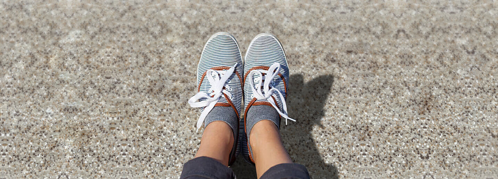

",
title: "escaliers",
subTitle: "solide et robustes",
})
@@include('./html-templates/_description-product.html',{
svg: '',
title: "ESCLIERS ET COLONNES",
text: "
Pour vos besoin en escaliers et colonnes, Multi Patio Rampe Experts est l’endroit idéal pour faire vos choix. Pensé pour satisfaire notre clientèle, notre éventail de matériaux pour vos es- caliers est établi en fonction de donner un look parfait à votre terrasse. Vous pourrez, à votre guise, choisir le revêtement de vos marches pour s’agencer parfaitement à votre plancher ou pour les plus excentriques, les mélanger.
Nous avons un souci d’esthétisme dans nos designs et pour cette raison, il est possible d’agencer les marches avec le même type de matériau que la surface choisie. La composante de cet agencement permettra d’augmenter la durée de vie utile du produit tout en assurant le même confort sous les pieds. Nous offrons soit des marches en aluminium, en fibre de verre, en bois recouvertes de membrane, en composite ou tout simplement en bois.
En options:
Dimensions variables
Marche agencé aux planchers
Durable et sans entretien
Un agencement parfait
ALUMINIUM
FIBRE DE VERRE
MEMBRANE
Tous les matériaux en succursale
LIMONS
Nos limons sont fabriqués sur mesure et totalement adaptés à l’élévation de votre patio. Ils confèrent un style épuré sans entretien accentuant la rigidité du support de vos marches. Ils sont constitués d’un aluminium de haute résistance dans un vaste choix de couleurs. De plus, la conception de.
En options:
Limon fermé ou ouvert
Choix de couleur agancé aux rampes
Des limons en aluminium efficaces et durables
Sans moisisure
Résistance accrue
Une fabribation sur mesure

LIMON OUVERT

LIMON FERMÉ
LIMON PATRIMOINE
Encore plus de choix
PLANCHER EN FIBRE DE VERRE

Voici une solution étanche et durable. Le plancher de fibre de verre est offert dans une grande variété de couleurs et textures. Il offrira une apparence éblouissante de votre surface. Ce type de produit est durable et nécessite très peu d’entretien.
Pourquoi choisir un plancher en fibre de verre ?
Étanche
Fabrication sur mesure en usine
Résistance exceptionnelle
Densité de fibre de verre contrôlée sur les deux faces
Une apparence éblouissante
GRIS
BEIGE
FUSAIN
Vaste choix en magasin
PLANCHER DE MEMBRANE
La souplesse et la chaleur sont les clés de nos solutions de membrane. Ce type de revêtement assure une imperméabilisation de votre surface tout en proposant un aspect visuel très esthétique. La douceur de la surface sera très confortable sous vos pieds. Les membranes nécessitent très peu d’entretien et propose aussi une solution pour ranger vos indésirables sous le patio à l’abri des intempéries.
Pour donner du style :
Choix de bordure
Gamme de couleur et motifs
Pourquoi choisir un plancher de membrane ?
Complètement imperméable à l’eau
Résistant au calcium et au chlore
Souple et résistante
Confortable et imperméable
BALTIC GREY
PEARL
STONEHEDGE
Grand choix de couleurs et motifs en magasin
PLANCHER DE BOIS
Bien entendu, rien ne vaut l’aspect et le rendu naturel de certaines essences de bois. Cependant, afin de garder ce type de plancher en bon état, il requiert de l’attention et un entretien récurant. Toutefois, si votre choix s’arrête sur un plancher de bois, les amoureux de matériaux nobles seront tous d’accord pour dire que vous aurez la plus belle terrasse en ville.